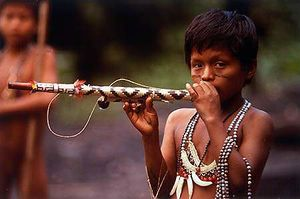

Org. Económica

Además de las actividades tradicionales de horticultura de roza y quema, caza, pesca y recolección, los yaguas se encuentran involucrados en la comercialización de pieles, madera, carne y frutas silvestres, así como en la arroz y yute para su venta en el mercado. Para la población yagua de cinco años y más el censo de 1993 arrojó 40% de analfabetismo, elevándose este porcentaje a 44% para el caso de la población femenina.
Los niveles de escolaridad alcanzados son bajos: 30% no cuenta con instrucción alguna y sólo 7% accedió a estudios secundarios.
Para 56% de la población de cinco años y más la educación escolar es impartida en 19 centros de los cuales sólo uno es de educación secundaria. Existe además un instituto agropecuario. Son 37 maestros que enseñan en estas escuelas, de los cuales sólo 16 son indígenas. Es interesante señalar que la totalidad de los maestros de secundaria son indígenas.